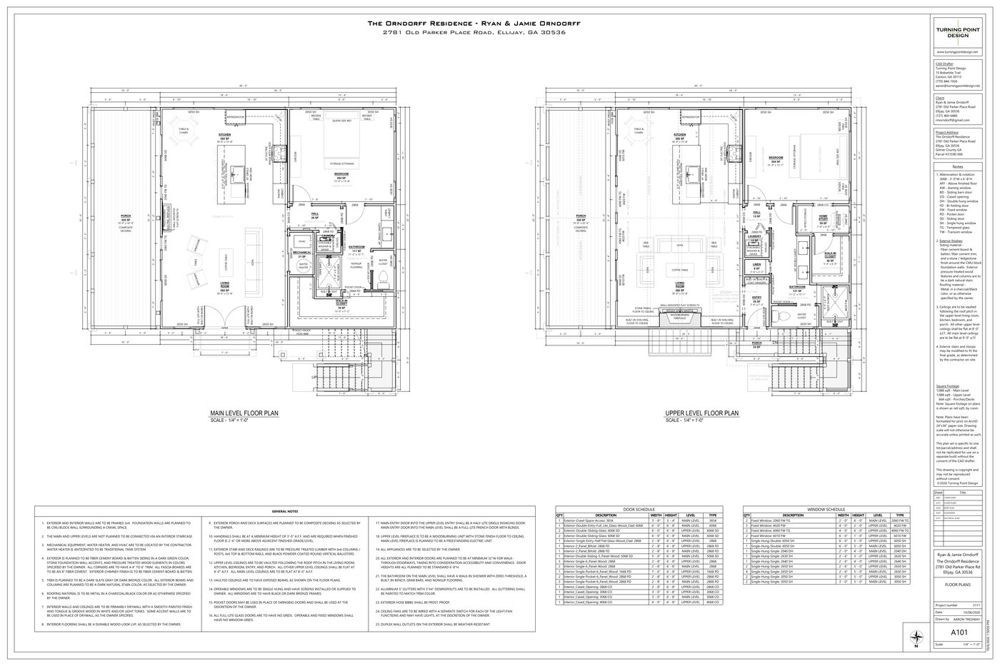

Site Plan
Property overview and placement for Orndorff - Ellijay GA at 2781 Old Parker Place Road, Ellijay, GA. Click image or scroll over it to zoom for details.

Property overview and placement for Orndorff - Ellijay GA at 2781 Old Parker Place Road, Ellijay, GA. Click image or scroll over it to zoom for details.
